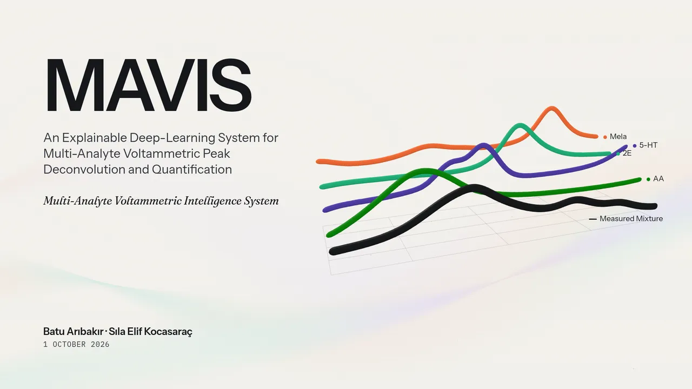

Presentations
Briefings on MAVIS: the signal it works with, the models behind it and how it explains its answers. Select a presentation to open it.
-

MAVIS Technical Overview
An explainable deep-learning system for multi-analyte voltammetric peak deconvolution and quantification.
Problem · Signal · Measurements · Data · Deep learning · Explainability · System